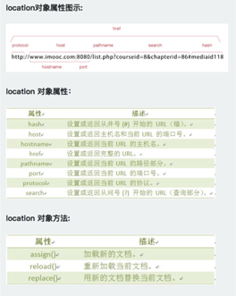
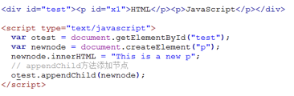

10月19日 周三
时间：上午2h,下午3h,晚上1h
成就：开始学习《JS入门》,学到了4.1编程练习
笔记：
进行页面显示初始化的js必须放在head里面，因为初始化都要求提前进行（如给页面body设置css等）；而如果是通过事件调用执行的function那么对位置没什么要求的
单行注释使用//；多行注释使用/注释内容/
alert confirm prompt window.open window.close
document.getElementById("ID") ; innerHTML ; Object.style.property ; Object.style.display=””;
10月20日 周四
时间：上午2h.下午4h，晚上0。
成就：js进阶篇,ife项目13
感悟：原来JS没有想象中的那么高深，也是一些基础语法加上一些函数，下一步想快速过完《JS进阶》然后刷完《JS高级教程》。10月底刷完吧。
10月21日
时间：上午2h
成就：
1.《JS进阶》第二章
2.《JS进阶》第三章
笔记：
Obj.Onkeyup ;
obj.keyCode=13;
parseInt();
myarray.length;
10月22日23日 周末
成就：
1.《JS进阶》第四章完成
2.《JS进阶》第五章完成
感悟：加油！
10月24日 周一
时间：上午2h,下午3h,晚上0.
成就：
1．《JS进阶》第六章
笔记：onclick;;onmouseover;onmouseout;
感悟：switch(se){}的括号里不用加引号，加了就错了！
10月25日 周二
时间：上午2.5h,下午1h
成就：《JS进阶》第七章 事件响应
笔记：
2.大小写：mystr.toUpperCase();age.toLowerCase();- 第二个字母：
document.write(mystr.charAt(2)); - 某字符串第一次出现的位置：
stringObject.indexOf(substring, startpos) - 分割字符串：
document.write(mystr.split("", 5));
6.提取字符串：document.write(mystr.substring(2,6));/*第2到第5个，从0开始数*/ - 提取指定数目的字符
document.write(mystr.substr(2,4)); - Math 对象属性
Math 对象方法 Math.ceil(x)可对一个数进行向上取整。Math.floor(x)可对一个数进行向下取整。Math.round(x)可把一个数字四舍五入为最接近的整数。Math.random()方法可返回介于 [0 ,1)的一个随机数。
10.数组：
11．document.write(mya.concat(4,5));该方法不会改变现有的数组，而仅仅会返回被连接数组的一个副本。- 指定分隔符连接数组
document.write(myarr.join(".")); - 颠倒顺序
document.write(myarr.reverse()); - 返回2-4之间的元素，不包括4
.document.write(myarr.slice(2,4)); - 排序：
function sortNum(a,b) { return a - b;} document.write(myarr.sort(sortNum));
10月26日 周三
时间：上午1h,下午2h
成就：完成第七章编程练习;《JS进阶》第八章 内置对象
感悟：
1.把显示器连在电脑上，瞬间感觉码农气息满满，开心，还买了优衣库码农专用外套。
笔记：
1.计时器
function clock(){
var time=new Date();
var attime= time.getHours()+":"+time.getMinutes()+":"+time.getSeconds();
document.getElementById("clock").value = attime;
}
setInterval(clock,100);
2.取消计时器：onclick="clearInterval(i)";
3.计数器：
取消计时器clearTimeout()
History 对象属性:var HL = window.history.length;
History 对象方法:
window.history.back(); = window.history.go(-1);
window.history.forward(); = window.history.go(1);
Location对象：

Navigator 对象包含有关浏览器的信息，通常用于检测浏览器与操作系统的版本。
screen对象screen.height 返回屏幕分辨率的高screen.width 返回屏幕分辨率的宽screen.availWidth 属性返回访问者屏幕的宽度，以像素计，减去界面特性，比如任务栏。screen.availHeight 属性返回访问者屏幕的高度，以像素计，减去界面特性，比如任务栏。
10月27日 周四
时间：上午3h
成就：第九章 DOM
笔记：
1.dom
document.getElementsByName(name)方法返回的是元素的数组，而不是一个元素，和数组类似也有length属性。document.getElementsByTagName(Tagname), Tagname是标签的名称，如p、a、img等标签名。getAttribute()方法可以得到属性的值setAttribute()方法:Lists[i].setAttribute("title","WEB前端技术");- childNodes访问选定元素节点下的所有子节点的列表，返回的值可以看作是一个数组，具有length属性。elementNode.childNodes;有兼容性问题。
node.firstChild与node.lastChild；mynode.parentNode;nodeObject.nextSibling; nodeObject.previousSibling;如果无此节点，则该属性返回 null。appendChild(newnode)
insertBefore(newnode,node);nodeObject.removeChild(node);把删除的子节点赋值给 x，这个子节点不在DOM树中，但是还存在内存中，可通过 x 操作。如果要完全删除对象，给 x 赋 null 值.
10月28日 周五
时间：上午2h,下午2h
成就：不记得了，学到了《JS进阶》9.14
##10月31日 周一
时间：上午2h,下午2h
成就：nothing
笔记：
11月1日 周二
时间：上午1h,下午2h
成就：完成《js进阶》，《dom事件》第三章
笔记：
node.replaceChild (newnode,oldnew )
document.createElement(tagName)
document.createTextNode(data)
```
网页尺寸
var w=document.documentElement.scrollWidth || document.body.scrollWidth;
var h=document.documentElement.scrollHeight || document.body.scrollHeight;
浏览器窗口可视区域大小
var w= document.documentElement.clientWidth || document.body.clientWidth;
var h= document.documentElement.clientHeight || document.body.clientHeight;
网页尺寸
var w= document.documentElement.offsetWidth || document.body.offsetWidth;
var h= document.documentElement.offsetHeight|| document.body.offsetHeight;
```
事件流：页面中接受时间的顺序，IE——事件冒泡流;Netscape——事件捕获流
事件冒泡：事件最开始由最具体的元素接收，然后逐级向上传播至最不具体的那个节点
事件捕获：不太具体的元素应该先接受事件， 最具体的元素最后才接受事件
1.HTML事件处理程序：直接在HTML标签中添加事件和事件处理程序。 缺点HTML与JS紧密耦合在一起，维护不便。
2.DOM 0级事件处理程序：较传统的处理方式：把一个函数 复制给 事件的处理程序 作为属性。优点：简单，跨浏览器兼容。
3.DOM 2级事件：
添加事件：element.addEventLisenter("click",function(){},false/true)
删除事件：element.removeEventLisenter()
IE事件处理程序使用attachEvent()和detachEvent(),不需要布尔值，需要加上 on
封装，能力检测
- DOM中的事件对象
1.type属性 事件类型
2.target属性 事件目标
3.stopPropagation() 阻止事件冒泡
4.preventDefault() 阻止事件的默认行为